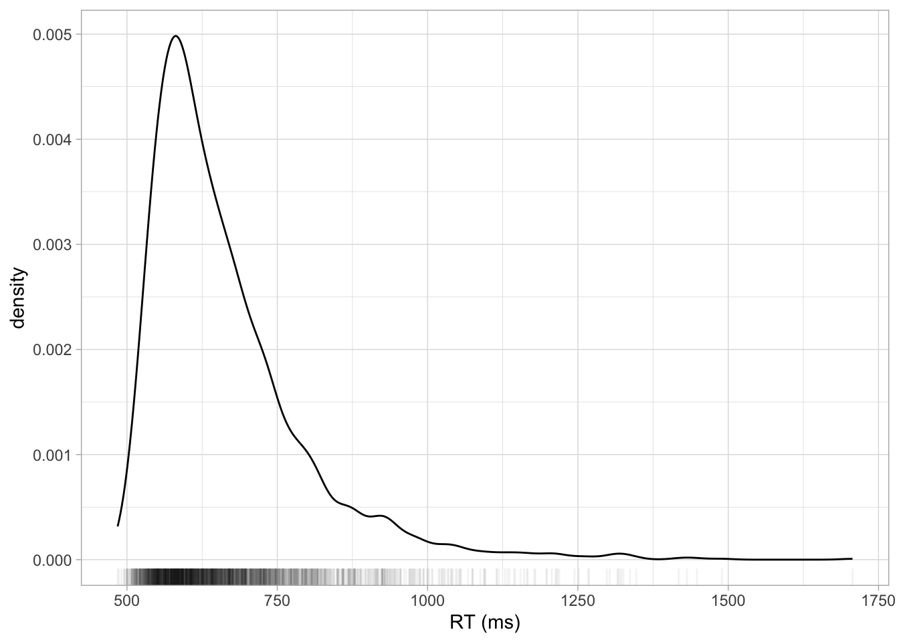
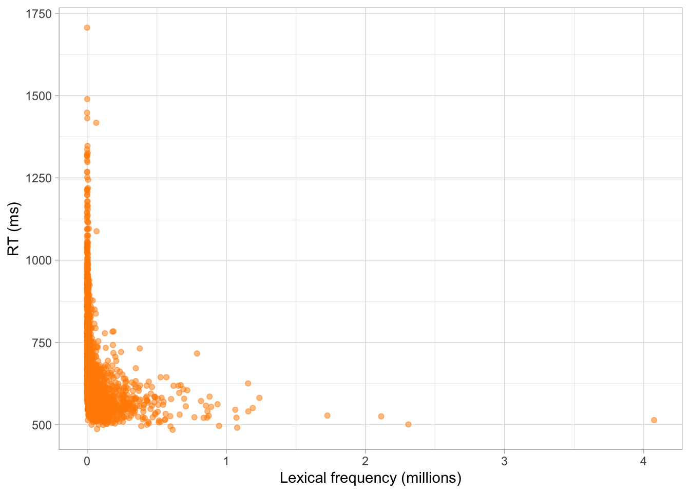
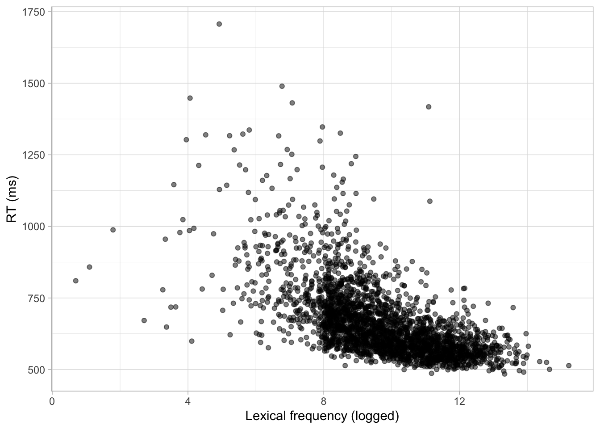
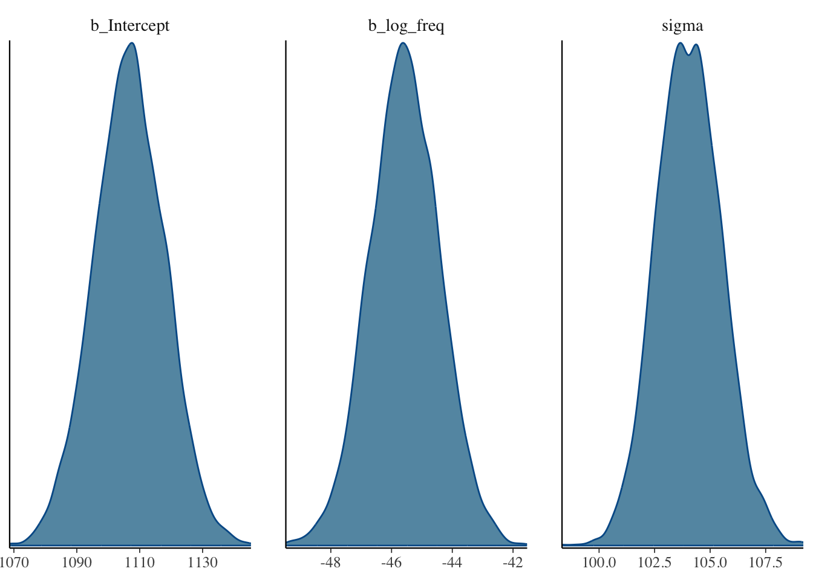
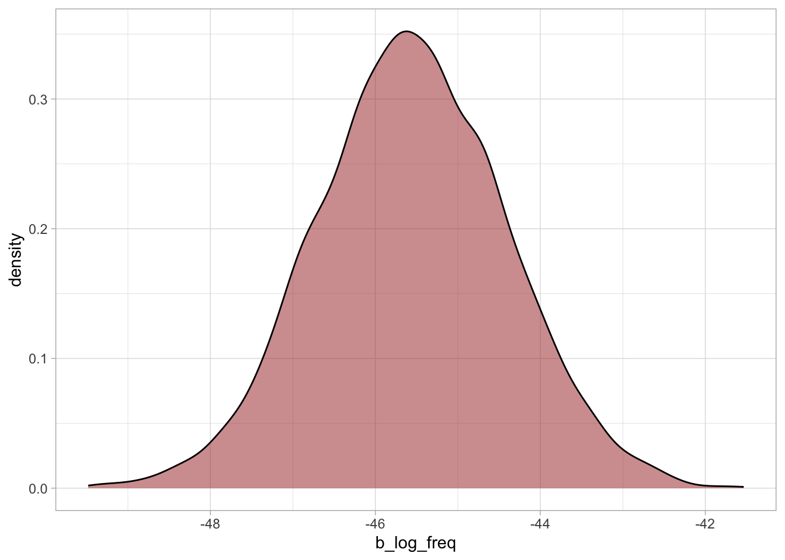
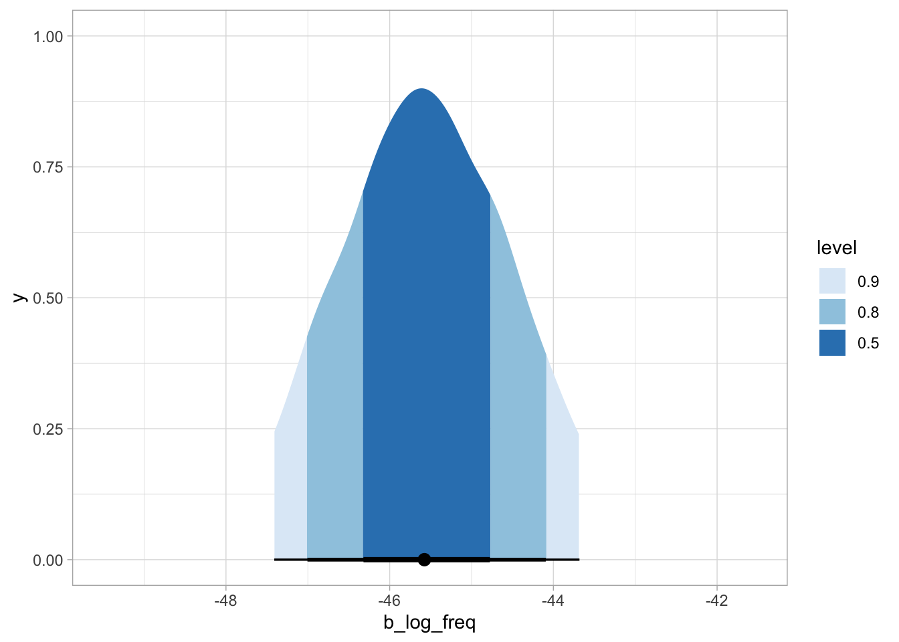
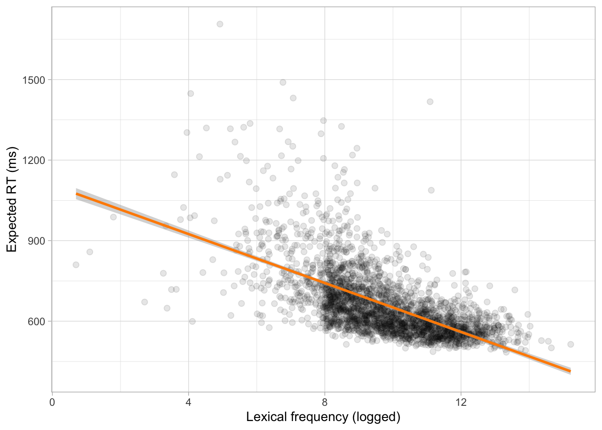

QML - Week 6
Regression models: the basics
1
2 Word frequency and reaction times
. . .
3 Which relationship?
4 Reaction times
5 Word frequency and RTs

6 Logged word frequency and RTs

7 Gaussian model of RT
\[RT \sim Gaussian(\mu, \sigma)\]
. . .
. . .
\[\begin{aligned} RT_i & \sim Gaussian(\mu_i, \sigma)\\ \mu_i & = \beta_0 + \beta_1 \cdot logf_i \end{aligned}\]
8 The equation of a line
\[y = \beta_0 + \beta_1 \cdot x\]
9 Regression model
\[\begin{aligned} RT_i & \sim Gaussian(\mu_i, \sigma)\\ \mu_i & = \beta_0 + \beta_1 \cdot logf_i & \text{[Regression equation]} \end{aligned}\]
. . .
10
11 Fit model in brms
rt_bm <- brm(
rt ~ 1 + log_freq,
family = gaussian,
data = croat,
cores = 4,
seed = 4125,
file = "cache/rt_bm"
)12 Model results
library(bayesplot)
mcmc_dens(rt_bm, pars = c("b_Intercept", "b_log_freq", "sigma"))
13 Posterior draws
rt_draws <- as_draws_df(rt_bm)
rt_draws# A draws_df: 1000 iterations, 4 chains, and 6 variables
b_Intercept b_log_freq sigma Intercept lprior lp__
1 1096 -44 107 664 -11 -15847
2 1120 -47 103 667 -11 -15846
3 1095 -45 105 660 -11 -15846
4 1121 -47 104 667 -11 -15845
5 1103 -45 102 663 -11 -15845
6 1105 -45 106 665 -11 -15845
7 1110 -46 103 664 -11 -15844
8 1092 -44 103 663 -11 -15845
9 1125 -47 103 666 -11 -15846
10 1114 -46 104 662 -11 -15845
# ... with 3990 more draws
# ... hidden reserved variables {'.chain', '.iteration', '.draw'}14 Posterior of \(\beta_1\)
rt_draws |>
ggplot(aes(b_log_freq)) +
geom_density(fill = "brown", alpha = 0.5)
15 Posterior of \(\beta_1\) with CrIs

16 CrIs of \(\beta_1\)
library(posterior)
# 95%
quantile2(rt_draws$b_log_freq, c(0.025, 0.975)) |> round() q2.5 q97.5
-48 -43 # 80%
quantile2(rt_draws$b_log_freq, c(0.1, 0.9)) |> round()q10 q90
-47 -44 # 60%
quantile2(rt_draws$b_log_freq, c(0.2, 0.8)) |> round()q20 q80
-47 -45 17 Expected values
\[\begin{aligned} \mu_i & = \beta_0 + \beta_1 \cdot logf_i\\ \mu_{[logf = 4]} & = \beta_0 + \beta_1 \cdot 4\\ \mu_{[logf = 12]} & = \beta_0 + \beta_1 \cdot 12\\ \end{aligned}\]
. . .
rt_draws <- rt_draws |>
mutate(
rt_logf_4 = b_Intercept + b_log_freq * 4,
rt_logf_12 = b_Intercept + b_log_freq * 12
)
quantile2(rt_draws$rt_logf_4, c(0.1, 0.9)) |> round()q10 q90
916 933 quantile2(rt_draws$rt_logf_12, c(0.1, 0.9)) |> round()q10 q90
556 564 18 Plotting expected values

19 Word frequency and reaction times (bis)
. . .
20 Correlation in NOT causation
. . .